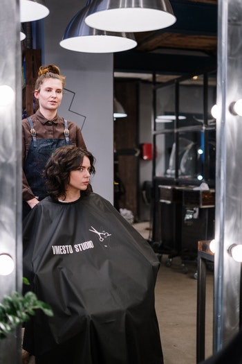

Target Audience
The targeted Audience of the cape town chamber of commerce is all business owners, small and medium sized entreprises as well as big corporations bref all entrepreneur who are looking ways to improve their business model and grow and those who are looking for business partners, because the cape town chamber of commerce is an assiciation made up of a network of businesses.
Persona 1: Hannah
Hannah is a young resident of cape Town she lived there since she was born fly out of cape town for couple occasions. And she recently graduated from after 3 long years of studying Hairdressing and cosmetology, since her younger age Hannah dreamed of having her own Beauty therapy business in Cape Town so after her studies, she was able to make her dream come true by owning the most prominent beauty therapy saloon in her area. So, because her business is successful, she wants to have good partnerships and be a member of a group of other entrepreneurs like her to share ideas and take her business to the next level.
Persona 2: Khumalo

Khumalo is also a young entrepreneur residing in Johannesburg where he owns already two beautiful 5 stars Hotels and one restaurant, since Cape Town attracts a lot of tourists every year, Khumalo wishes to expend his business to cape town as well to get his share of the market with is booming. So, he wants to have connections and have ideas on how businesses are run in Cape Town in order to take an informed decision before expending his business.